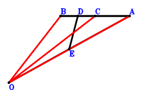

Exercise 5： Let E, D be the midpoints of AO, BC, respectively. A, B, C are collinear and \(AO^{2}=2 AB \cdot AC\). Prove that \(4 ED^{2}=BO^{2} + CO^{2}\).
\(\because \) D is the midpoint of BC \(\therefore \small\overrightarrow{OD}=\dfrac{\small\overrightarrow{OB}}{2} + \dfrac{\small\overrightarrow{OC}}{2}\).\(\because \) E is the midpoint of AO \(\therefore \small\overrightarrow{OE}=\dfrac{\small\overrightarrow{OA}}{2}\).\(\because \) A, B, C are collinear and \(AO^{2}=2 AB \cdot AC\) \( \therefore- 2 \small\overrightarrow{BA} \cdot \small\overrightarrow{CA} + \small\overrightarrow{OA}^{2}=\small\overrightarrow{OA}^{2} - 2 \left(\small\overrightarrow{OA} - \small\overrightarrow{OB}\right) \cdot \left(\small\overrightarrow{OA} - \small\overrightarrow{OC}\right)=- \small\overrightarrow{OA}^{2} + 2 \small\overrightarrow{OA} \cdot \small\overrightarrow{OB} + 2 \small\overrightarrow{OA} \cdot \small\overrightarrow{OC} - 2 \small\overrightarrow{OB} \cdot \small\overrightarrow{OC}=0.\)In conclusion, \(4 \small\overrightarrow{DE}^{2} - \small\overrightarrow{OB}^{2} - \small\overrightarrow{OC}^{2}=- \small\overrightarrow{OB}^{2} - \small\overrightarrow{OC}^{2} + 4 \left(- \small\overrightarrow{OD} + \small\overrightarrow{OE}\right)^{2}=- \small\overrightarrow{OB}^{2} - \small\overrightarrow{OC}^{2} + 4 \left(\dfrac{\small\overrightarrow{OA}}{2} - \dfrac{\small\overrightarrow{OB}}{2} - \dfrac{\small\overrightarrow{OC}}{2}\right)^{2}=\small\overrightarrow{OA}^{2} - 2 \small\overrightarrow{OA} \cdot \small\overrightarrow{OB} - 2 \small\overrightarrow{OA} \cdot \small\overrightarrow{OC} + 2 \small\overrightarrow{OB} \cdot \small\overrightarrow{OC}=0\), that is, \(4 ED^{2}=BO^{2} + CO^{2}\).
Exercise 19： Let OCAD be a parallelogram. C, B, A are collinear and \(BD^{2}=2 BA \cdot CA\). Prove that \(OA^{2}=CO^{2} + OB^{2}\).
Exercise 20： Let E, D be the midpoints of OA, BC, respectively. B, C, A are collinear and \(ED^{2}=\dfrac{BA \cdot CA}{2}\). Prove that \(OA^{2}=OB^{2} + OC^{2}\).

\(\because \) D is the midpoint of BC \(\therefore \small\overrightarrow{AD}=\dfrac{\small\overrightarrow{AB}}{2} + \dfrac{\small\overrightarrow{AC}}{2}\).\(\because \) E is the midpoint of OA \(\therefore \small\overrightarrow{AE}=\dfrac{\small\overrightarrow{AO}}{2}\).\(\because \) B, C, A are collinear and \(ED^{2}=\dfrac{BA \cdot CA}{2}\) \( \therefore- \small\overrightarrow{BA} \cdot \small\overrightarrow{CA} + 2 \small\overrightarrow{ED}^{2}=- \small\overrightarrow{AB} \cdot \small\overrightarrow{AC} + 2 \left(\small\overrightarrow{AD} - \small\overrightarrow{AE}\right)^{2}=- \small\overrightarrow{AB} \cdot \small\overrightarrow{AC} + 2 \left(\dfrac{\small\overrightarrow{AB}}{2} + \dfrac{\small\overrightarrow{AC}}{2} - \dfrac{\small\overrightarrow{AO}}{2}\right)^{2}=\dfrac{\small\overrightarrow{AB}^{2}}{2} - \small\overrightarrow{AB} \cdot \small\overrightarrow{AO} + \dfrac{\small\overrightarrow{AC}^{2}}{2} - \small\overrightarrow{AC} \cdot \small\overrightarrow{AO} + \dfrac{\small\overrightarrow{AO}^{2}}{2}=0.\)In conclusion, \(\small\overrightarrow{OA}^{2} - \small\overrightarrow{OB}^{2} - \small\overrightarrow{OC}^{2}=\small\overrightarrow{AO}^{2} - \left(\small\overrightarrow{AB} - \small\overrightarrow{AO}\right)^{2} - \left(\small\overrightarrow{AC} - \small\overrightarrow{AO}\right)^{2}=- \small\overrightarrow{AB}^{2} + 2 \small\overrightarrow{AB} \cdot \small\overrightarrow{AO} - \small\overrightarrow{AC}^{2} + 2 \small\overrightarrow{AC} \cdot \small\overrightarrow{AO} - \small\overrightarrow{AO}^{2}=0\), that is, \(OA^{2}=OB^{2} + OC^{2}\).
Exercise 21： Let BOCD be a parallelogram. DA=BO and OA=OC. Prove that BA⊥AC.